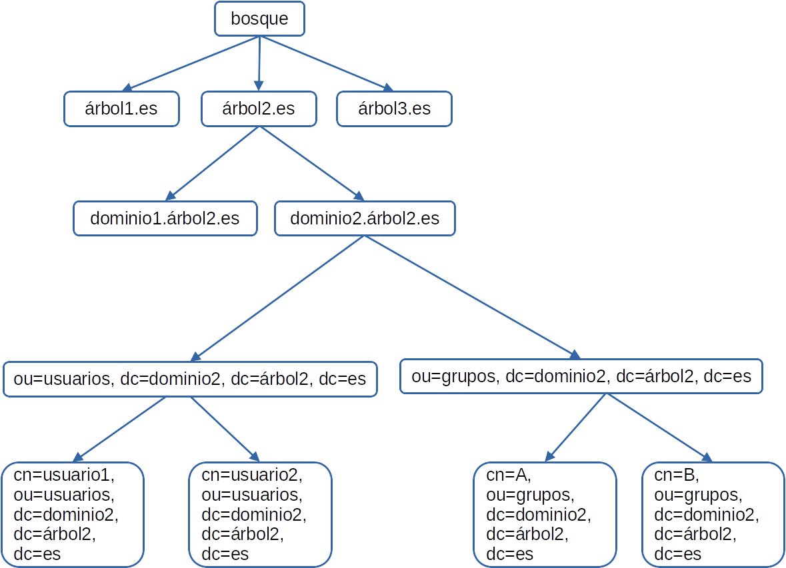
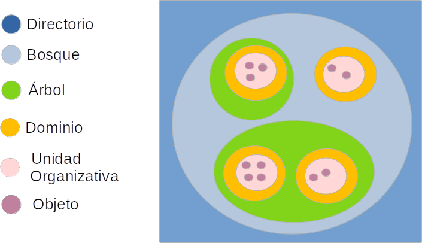

Active Directory Domain Services (AD DS)#
Active Directory#
El Directorio Activo (Active Directory en inglés) es el servicio de directorio utilizado en entornos de red de Microsoft Windows. Proporciona un conjunto de servicios de administración centralizada de recursos de red, como usuarios, grupos, equipos, impresoras y otros objetos, en un dominio de Windows.
A diferencia de los grupos de trabajo — donde los equipos tienen una relación de igual a igual y los usuarios y privilegios se administran de forma individual en cada equipo —, en el Directorio Activo la administración es centralizada y se organiza jerárquicamente en los siguientes componentes:

Bosque (Forest): Es el nivel más alto en la estructura del Directorio Activo. Un bosque es una colección de uno o más dominios de Windows que comparten una relación de confianza mutua. Cada bosque tiene un nombre de dominio raíz y comparte una base de datos y una política de seguridad común.
Dominio (Domain): Un dominio es una unidad lógica en el Directorio Activo que agrupa objetos relacionados, como usuarios, grupos y recursos. Cada dominio tiene un nombre único dentro del bosque y se administra de forma independiente. Los dominios pueden tener relaciones de confianza con otros dominios dentro del mismo bosque.
Árbol (Tree): Un árbol es una colección de uno o más dominios que comparten una estructura de nombres contigua (por ejemplo, ventas.empresa.local como subdominio de empresa.local) unidos por relaciones de confianza bidireccionales y transitivas. El primer dominio creado en un bosque se convierte en el dominio raíz, y los dominios adicionales se agregan como subdominios en forma de árbol.
Unidad Organizativa (Organizational Unit - OU): Una OU es una unidad organizativa que se utiliza para organizar y administrar los objetos del Directorio Activo, como usuarios, grupos y equipos. Las OUs se crean dentro de los dominios y permiten la delegación de administración y la aplicación de políticas específicas a grupos de objetos.
Objeto: Los objetos en el Directorio Activo representan recursos de red, como usuarios, grupos, equipos, impresoras, entre otros. Cada objeto tiene atributos que definen sus propiedades y características.
Contenedores Un contenedor es similar a una UO en términos de ser una entidad lógica utilizada para agrupar objetos relacionados dentro de un dominio de Active Directory, la principal diferencia radica en que las UOs proporcionan una estructura jerárquica para organizar y administrar objetos en un dominio de Active Directory, mientras que los contenedores son entidades más simples que se utilizan para agrupar objetos relacionados, pero sin las mismas capacidades de administración y delegación de tareas.
La estructura del Directorio Activo permite una administración eficiente de la red, al permitir la centralización de la administración de usuarios, recursos y políticas de seguridad. Además, facilita la implementación de políticas de grupo, la asignación de permisos y la gestión de la seguridad en toda la red.

Controlador de dominio#
El controlador de dominio es un componente clave del directorio activo (Active Directory) que proporciona servicios de autenticación y autorización a los usuarios y equipos en un dominio de Active Directory. También proporciona servicios de replicación de directorio a través de la red y mantiene una copia del directorio activo en sí. Un dominio puede (y suele) tener varios controladores que replican la base de datos entre sí.
Active Directory depende críticamente del DNS: los clientes localizan a su controlador de dominio mediante registros DNS especiales (registros SRV); por eso, al crear un dominio, el propio servidor suele instalarse también como servidor DNS, y los clientes deben usarlo como su DNS (es lo primero que se configura en los casos prácticos).
Grupos del dominio#
En un dominio, cada grupo se define por dos características: su tipo (para qué sirve) y su ámbito (quién puede ser miembro y dónde se puede utilizar).
Tipos de grupos
Los grupos de distribución sólo se pueden utilizar con aplicaciones de correo electrónico para enviar correo electrónico a grupos de usuarios. Los grupos de distribución no tienen habilitada la seguridad, lo que significa que no se pueden incluir en las listas de control de acceso.
Los grupos de seguridad se utilizan para controlar el acceso a los recursos de la red. Se pueden crear reglas de acceso a recursos, como carpetas compartidas o impresoras, y aplicarlas a un grupo de usuarios. Los usuarios que pertenecen al grupo tendrán acceso a los recursos permitidos por las reglas de acceso del grupo.
Ámbitos
Los grupos de ámbito universal: pueden incluir como miembros las cuentas de cualquier dominio del bosque, los grupos globales y los grupos universales. Además, al grupo se le puede asignar permisos en cualquier dominio.
Los grupos de ámbito global: pueden incluir como miembros las cuentas del mismo dominio y los grupos globales del mismo dominio. Además, se le puede asignar permisos en cualquier dominio.
Los grupos de ámbito de dominio local: pueden incluir como miembros cuentas, grupos globales y grupos universales de cualquier dominio, además de grupos de dominio local de su propio dominio. Sin embargo, sólo se les pueden asignar permisos sobre recursos de su propio dominio.
Nota
La estrategia de uso que recomienda Microsoft se resume en las siglas AGDLP: las cuentas (Accounts) se meten en grupos Globales, los grupos globales en grupos de Dominio Local, y a estos últimos se les asignan los Permisos sobre los recursos.
Tipos de perfiles de usuario#
En un dominio, un usuario puede iniciar sesión desde cualquier equipo, así que importa mucho dónde se guarda su perfil (su escritorio, sus documentos, su configuración...). Según dónde se almacene y quién pueda modificarlo, distinguimos los siguientes tipos de perfil:
Perfil de usuario local: Se guarda en el disco duro local del equipo cliente, de modo que todas las modificaciones que se realicen serán específicas del ordenador en el que se han establecido.
Perfil de usuario móvil: Los crea el administrador y se almacenan en una carpeta compartida por el servidor. Está asociada a la cuenta del dominio, de modo que estará disponible de forma independiente al ordenador concreto desde el que inicie sesión el usuario. Dado que el perfil se encuentra en el servidor, todos los cambios realizados en éste también se guardan en el servidor.
Perfil de usuario obligatorio: Podríamos decir que son perfiles móviles de sólo lectura, ya que solamente los administradores del dominio pueden realizar cambios en estos perfiles. De esta forma, el administrador podrá definir configuraciones para usuarios o grupos, y éstos no podrán cambiarlos.
Perfil de usuario temporal: Cuando se produce un error que impide cargar un perfil móvil o un perfil obligatorio, se crea un perfil temporal para facilitar el inicio de sesión del usuario. Cuando el usuario acaba su sesión, el perfil temporal se elimina y se pierden todas las modificaciones realizadas por el usuario en su entorno.
Perfil de usuario super-obligatorio: Este tipo de perfiles se incorpora a partir de Windows Server 2008 y su objetivo es similar al de los perfiles obligatorios, con la diferencia de que, si se produce un error que impida cargar el perfil, el usuario no podrá iniciar sesión. En otras palabras, un perfil de usuario super-obligatorio impedirá que se cargue un perfil temporal cuando exista algún motivo que impida la carga del perfil super-obligatorio.
Nota
El perfil móvil se configura en la pestaña Perfil de las propiedades del usuario (en Usuarios y equipos de Active Directory), indicando una ruta a una carpeta compartida del servidor, por ejemplo \\servidor\perfiles$\%username%. Para convertirlo en obligatorio basta con renombrar el fichero NTUSER.DAT del perfil a NTUSER.MAN.
Directiva de Grupo GPO#
Una Directiva de Grupo (Group Policy Object, GPO) es un conjunto de reglas que controlan el entorno de trabajo de las cuentas de usuario y de equipo: proporciona la gestión centralizada de la configuración del sistema operativo, de las aplicaciones y de los usuarios en un entorno de Active Directory. En otras palabras, la Directiva de Grupo controla, en parte, lo que los usuarios pueden y no pueden hacer en un sistema informático.
Toda GPO tiene dos mitades: la Configuración del equipo (se aplica al equipo, inicie sesión quien inicie) y la Configuración de usuario (se aplica al usuario, se siente donde se siente). En un dominio se administran desde la consola Administración de directivas de grupo (gpmc.msc), vinculando cada GPO al nivel que nos interese:
Equipo Local: tan solo se aplican en el equipo que las tiene asignadas independientemente del dominio al que pertenezca.
Sitio: se aplican a los equipos y/o usuarios de un sitio, independientemente del dominio.
Dominio: se aplican a todos los equipos y/o usuarios de un dominio.
Unidad Organizativa (OU): se aplican únicamente a los equipos y/o usuarios que pertenecen a la OU.
Las directivas se aplican exactamente en ese orden — Local → Sitio → Dominio → OU — y, en caso de conflicto, gana la última en aplicarse, es decir, la más cercana al objeto (la de la OU).
Los equipos refrescan las directivas periódicamente; para no esperar podemos forzar su aplicación y comprobar cuáles se han aplicado:
gpupdate /force # fuerza la aplicación inmediata de las directivas
gpresult /r # muestra qué GPO se han aplicado al equipo y al usuario
Recursos compartidos#
Los permisos NTFS y los permisos de los recursos compartidos funcionan en un dominio igual que en un equipo aislado (ver Permisos NTFS y carpetas compartidas), con una diferencia importante: los permisos ahora se asignan a los usuarios y grupos del dominio, de modo que una carpeta compartida en el servidor da servicio a todos los equipos con un único punto de administración.
Sobre esta pieza se apoyan, por ejemplo, los perfiles móviles y las carpetas personales de los usuarios: una carpeta compartida en el servidor (habitualmente oculta con $) a la que se accede como \\servidor\recurso y donde el control fino de acceso se hace con los permisos NTFS.
Windows Deployment Services (WDS)#
Windows Deployment Services (WDS) es un rol de Windows Server que permite instalar Windows en los equipos de la red sin necesidad de USB ni DVD: el servidor almacena las imágenes y el equipo cliente arranca desde la tarjeta de red (PXE, Network Boot), descarga del servidor un entorno de instalación y desde él instala el sistema. Se manejan dos tipos de imágenes:
Imagen de arranque (
boot.wim): el entorno mínimo (Windows PE) que el cliente descarga y arranca para lanzar la instalación.Imagen de instalación (
install.wim): contiene el sistema operativo que se va a instalar; puede haber varias (distintas versiones o ediciones) en el mismo servidor.
Para que funcione, la red necesita además DHCP (el cliente PXE tiene que obtener una IP antes de tener sistema operativo) y DNS.